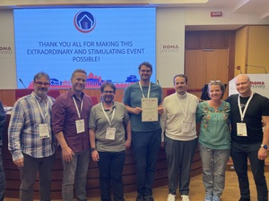
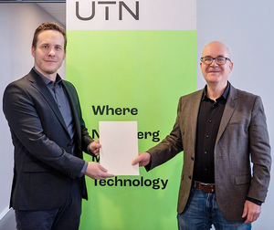

News
-
Best Paper Award at IPIN 2026 in Rome!
At IPIN 2026 the MLPS Lab has 5 papers accepted and won the best paper award for “ChronoChart: Setup-Agnostic Channel Charting for Label-Free Indoor Localization”. Thanks to all the co-authors from Fraunhofer IIS and FAU Erlangen-Nürnberg!

-
Welcome to the lab, Jonathan and Alex!
Starting June 1 Jonathan and Alex will join MLPS lab. Jonathan works on representation learning for wireless channels and Alex works on Constrained Reinforcement Learning.
-
We start our lab!
Chris has been appointed full professor of Machine Learning and Positioning Systems at the University of Technology Nuremberg (UTN).
